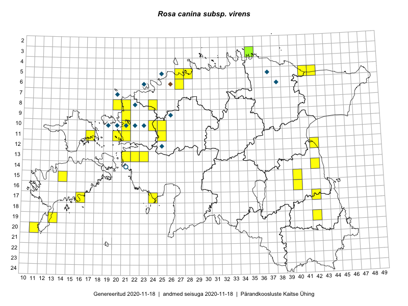

Rosa canina subsp. virens — roheliseleheline kibuvits
Rosaceae :: Rosa canina subsp. virens (Wahlenb.) Šmite (45)

Kaart põhineb 45 kirjel:
vaatlusi 35
herbaareksemplare 10
Taime kaasaegsed ja ajaloolised leiukohad asuvad 39 ruudus.
Tingmärgid ja ruutude arvud periooditi (U1 / V2 )
█ 2006–2020 (31/–)
◆/◇ 1971–2005 (7/0)
○ 1921–1970 (1/0)
+ kuni 1920 (0/0)
× hävinud (–/0)
? kaheldav (–/0)
| Ruut | Leidja(d) | Leiuaeg | Kirje |
|---|---|---|---|
| 05-37 | H. Krall | 1985-07-17 | ruut/ala: Rosa canina subsp. virens (Wahlenb.) Šmite |
| 08-22 | T. Ploompuu | 1998-08-17 | ruut/ala: Rosa canina subsp. virens (Wahlenb.) Šmite |
| 14-42 | Peedu Saar, Ott Luuk | 2015-06-21 | ruut/ala: Rosa canina subsp. virens (Wahlenb.) Šmite |
| 11-17 | Eeva-Maria Jeletsky, Tarmo Niitla | 2015-06-17 | ruut/ala: Rosa canina subsp. virens (Wahlenb.) Šmite |
| 19-13 | Oliver Parrest | 2015-07-01 | ruut/ala: Rosa canina subsp. virens (Wahlenb.) Šmite |
| 13-23 | Kirsi Loide, Marje Loide | 2015-04-20–2015-04-20T12:00Z | ruut/ala: Rosa canina subsp. virens (Wahlenb.) Šmite |
| 05-27 | Erkki Otsman, Sergei Smirnov | 2015-07-08 | ruut/ala: Rosa canina subsp. virens (Wahlenb.) Šmite |
| 05-28 | Erkki Otsman, Sergei Smirnov | 2015-06-26–2015-07-06 | ruut/ala: Rosa canina subsp. virens (Wahlenb.) Šmite |
| 13-23 | Kirsi Loide, Marje Loide | 2015-08-18–2015-08-20 | ruut/ala: Rosa canina subsp. virens (Wahlenb.) Šmite |
| 13-22 | Kirsi Loide, Marje Loide | 2015-08-10–2015-08-13 | ruut/ala: Rosa canina subsp. virens (Wahlenb.) Šmite |
| 17-42 | Kirsi Loide, Marje Loide | 2015-04-29–2015-04-29T15:00:00Z | ruut/ala: Rosa canina subsp. virens (Wahlenb.) Šmite |
| 19-42 | Kirsi Loide, Marje Loide | 2015-07-29–2015-07-30 | ruut/ala: Rosa canina subsp. virens (Wahlenb.) Šmite |
| 15-14 | Karin Kikas, Elle Rajandu | 2015-07-23 | ruut/ala: Rosa canina subsp. virens (Wahlenb.) Šmite |
| 17-16 | Sirje Azarov, Aira Alasi | 2015-08-17 | ruut/ala: Rosa canina subsp. virens (Wahlenb.) Šmite |
| 08-20 | Marju Erit | 2015-08-01 | ruut/ala: Rosa canina subsp. virens (Wahlenb.) Šmite |
| 16-40 | Maret Gerz, Ott Luuk | 2014-06-25 | ruut/ala: Rosa canina subsp. virens (Wahlenb.) Šmite |
| 13-21 | Ott Luuk, Maret Gerz | 2014-07-03 | ruut/ala: Rosa canina subsp. virens (Wahlenb.) Šmite |
| 20-11 | Mari Reitalu, Triin Reitalu | 2015-07-19 | ruut/ala: Rosa canina subsp. virens (Wahlenb.) Šmite |
| 10-25 | Ott Luuk, Jaak-Albert Metsoja, Maret Gerz | 2014-06-11 | ruut/ala: Rosa canina subsp. virens (Wahlenb.) Šmite |
| 11-21 | Hanna-Eliisa Luts, Tõnu Ploompuu | 2015-08-13 | ruut/ala: Rosa canina subsp. virens (Wahlenb.) Šmite |
| 11-25 | Hanna-Eliisa Luts, Tõnu Ploompuu | 2015-07-28 | ruut/ala: Rosa canina subsp. virens (Wahlenb.) Šmite |
| 10-24 | Hanna-Eliisa Luts, Tõnu Ploompuu, Anna-Grete Rebane | 2015-07-19 | ruut/ala: Rosa canina subsp. virens (Wahlenb.) Šmite |
| 11-20 | Hanna-Eliisa Luts, Tõnu Ploompuu | 2015-08-13 | ruut/ala: Rosa canina subsp. virens (Wahlenb.) Šmite |
| 06-27 | Tõnu Ploompuu | 2015-08-11 | ruut/ala: Rosa canina subsp. virens (Wahlenb.) Šmite |
| 09-21 | Kadi-Liis Kesler, Tõnu Ploompuu | 2015-07-14 | ruut/ala: Rosa canina subsp. virens (Wahlenb.) Šmite |
| 08-24 | Sirje Lagle, Tõnu Ploompuu | 2015-08-18 | ruut/ala: Rosa canina subsp. virens (Wahlenb.) Šmite |
| 09-21 | Sirje Lagle, Tõnu Ploompuu | 2015-05-16 | ruut/ala: Rosa canina subsp. virens (Wahlenb.) Šmite |
| 10-21 | Tõnu Ploompuu | 2015-05-02 | ruut/ala: Rosa canina subsp. virens (Wahlenb.) Šmite |
| 10-21 | Tõnu Ploompuu | 2015-08-21–2015-08-23 | ruut/ala: Rosa canina subsp. virens (Wahlenb.) Šmite |
| 12-42 | Eeva-Maria Jeletsky, Tarmo Niitla | 2016-06-04 | ruut/ala: Rosa canina subsp. virens (Wahlenb.) Šmite |
| 17-24 | Tiit Hallikma, Tõnu Ploompuu | 2016-07-06 | ruut/ala: Rosa canina subsp. virens (Wahlenb.) Šmite |
| 08-21 | Tiit Hallikma, Tõnu Ploompuu | 2016-07-07 | ruut/ala: Rosa canina subsp. virens (Wahlenb.) Šmite |
| 05-42 | Tiit Hallikma, Tõnu Ploompuu | 2016-07-26 | ruut/ala: Rosa canina subsp. virens (Wahlenb.) Šmite |
| 05-41 | Tiit Hallikma, Tõnu Ploompuu | 2016-07-26 | ruut/ala: Rosa canina subsp. virens (Wahlenb.) Šmite |
| 15-40 | Peedu Saar | 2017-06-21–2017-06-22 | ruut/ala: Rosa canina subsp. virens (Wahlenb.) Šmite |
| 07-20 | Toomas Kukk | 1993-07-31 | TAA0015192: Rosa canina subsp. virens (Wahlenb.) Šmite |
| 10-19 | Toomas Kukk | 1994-07-10 | TAA0015194: Rosa canina subsp. virens (Wahlenb.) Šmite |
| 10-19 | Toomas Kukk | 1994-07-10 | TAA0015195: Rosa canina subsp. virens (Wahlenb.) Šmite |
| 06-23 | Tõnu Ploompuu | 1995-08-01 | TALL A009778: Rosa canina subsp. virens (Wahlenb.) Šmite |
| 06-23 | Tõnu Ploompuu | 1995-08-01 | TALL A009779: Rosa canina subsp. virens (Wahlenb.) Šmite |
| 10-22 | Tõnu Ploompuu | 1994-09-05 | TALL A009872: Rosa canina subsp. virens (Wahlenb.) Šmite |
| 10-23 | Tõnu Ploompuu | 1995-06-16 | TALL A009873: Rosa canina subsp. virens (Wahlenb.) Šmite |
| 03-35 | Sander Laherand, Nele Jõessar, Ott Luuk | 2016-07-26 | TAA0135774: Rosa canina subsp. virens (Wahlenb.) Šmite |
| 03-35 | Sander Laherand, Nele Jõessar, Ott Luuk | 2016-07-26 | TAA0135773: Rosa canina subsp. virens (Wahlenb.) Šmite |
| 14-21 | L. Kõressaar | 1964-10-06 | TALL A010910: Rosa canina subsp. virens (Wahlenb.) Šmite |
Ruutude arv uue atlase andmekogu järgi. Muuhulgas arvestab vanemat herbaariumi, 2005. aasta atlase välitöölehtedelt uuesti digitaliseeritud andmeid jne. Uue atlase andmekogust pärinevad andmed on kaardile kantud siniste sümbolitega.↩︎
Ruutude arv 2005. aasta atlase (Kukk, T., Kull, T., Eesti taimede levikuatlas. Eesti Maaülikool, Põllumajandus- ja Keskkonnainstituut, Tartu, 2005) järgi. Andmeallikana on kasutatud levik.exe programmi, kus igas ruudus on registreeritud vaid uusim leid. Seetõttu on vanemate perioodide kohta andmed puudulikud. Kasutatud levik.exe andmestikus leidub mõningaid kõrvalekaldeid atlase trükis ilmunud versioonist, sagedamini tarnade ja käpaliste seas. Lisaks leidub selles andmestikus valik liike (peamiselt väheste leidudega tulnuktaimed), mille kaarte trükis ei avaldatud. Vana atlase andmed ruutudest, milles ei ole uue atlase andmekogus leide enne 2006. aastat, on kaardil esitatud punaste sümbolitega. Vana atlase andmetel hävinud ja kaheldavaid leiukohti pole hilisemate (taas)leidude põhjal korrigeeritud.↩︎